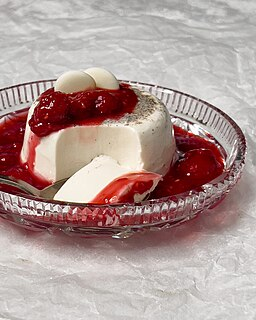

Panna Cotta

Description
This is a traditional Italian dessert to finish off your meal.
Ingredients
- 1/3 cup skim milk
- 1 0.25 ounce package unflavored gelatin
- 2 1/2 cups heavy cream
- 1/2 cup white sugar
- 1 1/2 teaspoons vanilla extract
Steps
- Gather all ingredients.
- Pour milk into a small bowl and sprinkle gelatin powder over the milk. Stir until combined. Set aside.
- Heat heavy cream in a saucepan over medium heat until it begins to simmer. Remove from heat and stir in sugar and vanilla extract.
- Over medium heat, stir heavy cream and sugar together in a saucepan. Bring to a boil.
- Immediately stir gelatin mixture into boiling cream mixture. Stir until completely dissolved. Cook and stir for 1 minute.
- Remove pan from heat and stir in the vanilla extract.
- Pour mixture into 6 individual ramekins or custard cups. Let cool, uncovered, about 20 minutes.
- Cover ramekins with plastic wrap and refrigerate until set, at least 4 hours or overnight.
- If desired, serve with berries or a drizzle of caramel sauce.
Home